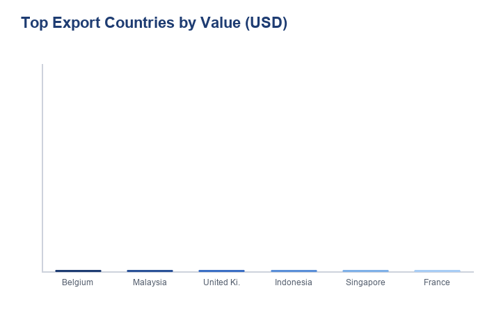
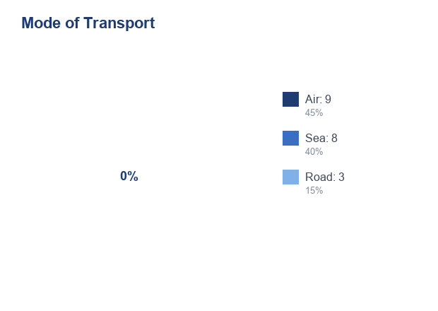

Total Shipments
0
Shipment records preserved from the source table.
Explore international trade patterns through interactive analytics, shipment intelligence, and data-driven visualizations.
Shipment records preserved from the source table.
Real declared shipment value in USD across all 20 rows.
Distinct export origins represented in the dataset.
Aggregate tax amount reported in Bangladeshi Taka.
A 34-second silent briefing rendered directly from the same 20 preserved records that power every chart and KPI below. Nothing in the video is invented.
Six scenes, each reading from verified records.
The layout follows a premium analytics rhythm: wide overview cards, compact support panels, and focused visual hierarchy.
Key statistics extracted from the 20-row shipment sample.
Largest records by declared USD value.
| # | Importer | Product | Value |
|---|---|---|---|
| 1 | VITALAC DAIRY AND FOOD INDUSTRIES LIMITED | BIOMIL 3 GROWING-UP MILK FORMULA | $353,876.72 |
| 2 | IBCO FOOD INDUSTRIES LIMITED | MARGARINE (PASTRIFET SK) NPHO | $59,760.00 |
| 3 | BEXIMCO PHARMACEUTICALS LIMITED | PH RAW ABSOLUTE ETHANOL | $31,297.06 |
| 4 | MANJU INTERNATIONAL | BETELNUTS (SPLIT) | $28,800.00 |
| 5 | SAIFUL STORE | CAKE MARGARINE | $21,318.00 |
The Netherlands and India lead the shipment count.
Air is the leading mode while EUR dominates by value.
Most importers appear once; only a few recur.
The earlier storytelling pieces remain in the experience, now wrapped in the upgraded premium shell.
A funnel-like layout inspired by the reference, adapted to actual trade metrics.

Top export countries by trade value

Distribution of transport modes
Every chart from the original project is preserved, restyled, exportable, and synchronized with dark and light themes.
Shipment count by export country across all records.
Origin country distribution based on preserved shipment rows.
Transport mix of air, sea, and road shipments.
Distribution of destination ports in the source rows.
Declared USD value aggregated per export country.
USD-equivalent value breakdown by transaction currency.
Product category mix based on shipment chapter groupings.